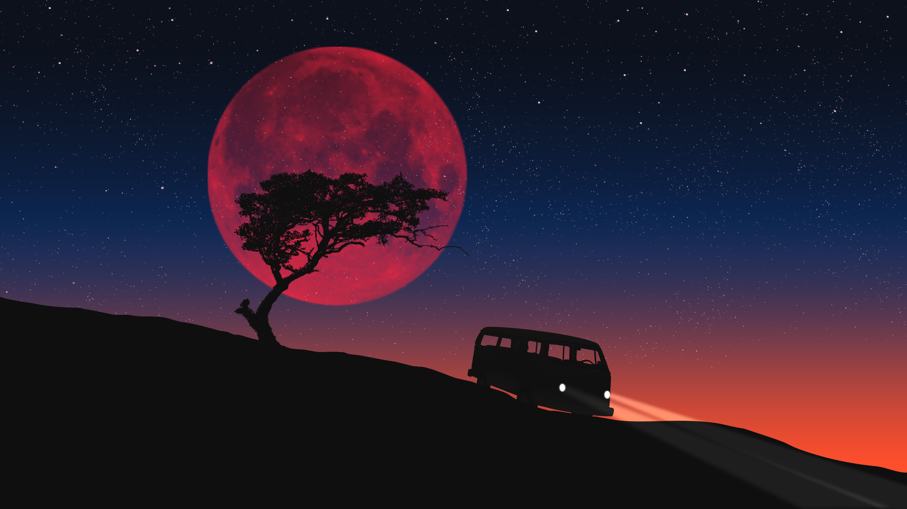
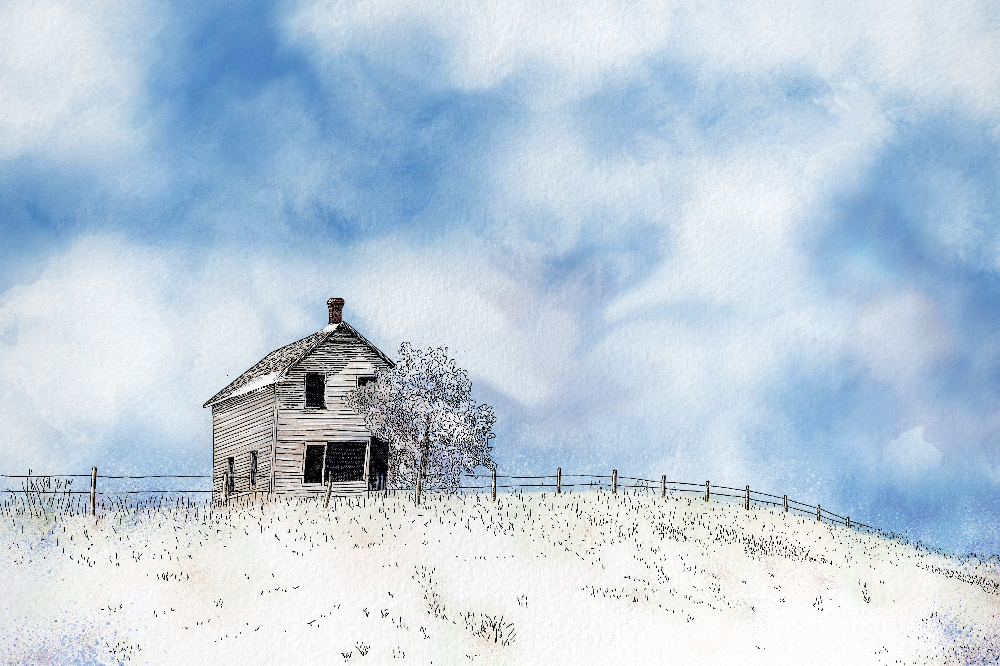

.png)
Nivel Básico
Exploración de materiales:
Familiarízate con una variedad de materiales artísticos, como lápices, acuarelas, acrílicos, óleos y pastel.
Experimenta con diferentes técnicas y efectos que puedes lograr con cada material.
Practica trazos y pinceladas básicas para desarrollar habilidades de manejo de herramientas.
Aprende los elementos básicos del arte, como la composición, el color, la forma y el espacio. Estudia la teoría del color y cómo mezclar colores primarios para obtener una paleta armoniosa. Practica la observación y la representación de objetos simples, naturaleza muerta y paisajes.
Nivel Intermedio
Desarrollo de estilo propio:
Descubre tus temas y motivos preferidos en el arte y expresa tu propia visión y emociones a través de tus obras.
Explora diferentes enfoques y técnicas para crear un estilo único y reconocible.
Recopila referencias e inspiración de diversas fuentes, como la naturaleza, la cultura o tus propias experiencias.
Profundiza en técnicas avanzadas de pintura, como el glaseado, el empaste y el esgrafiado. Experimenta con la aplicación de texturas y el uso de diferentes herramientas, como pinceles, espátulas o cuchillos de pintura. Aprende a crear efectos especiales y jugar con luces y sombras para agregar profundidad a tus obras.
Nivel Avanzado
Investigación y experimentación:
Investiga nuevos materiales, medios y técnicas emergentes en el arte contemporáneo.
Experimenta con combinaciones de medios mixtos, instalaciones o arte digital para expandir tus posibilidades creativas.
Desafía los límites tradicionales del arte y busca nuevas formas de expresión personal.
Crea una serie de obras de arte que tengan una temática o un concepto común. Explora a fondo un tema o una idea en diferentes enfoques y formatos, manteniendo una coherencia visual y conceptual. Busca retroalimentación y críticas constructivas para mejorar y refinar tu serie de obras.